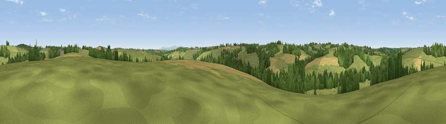

Viewpoint near Sutcombe
#36116 in England · top 87% of its area beats it · near SutcombeWhere it is
The exact computed spot (SS 36875 15575). Click the marker for map links.
The view, rendered

A 360° render of this exact spot computed from the terrain model, tree cover and land cover — summer colours, afternoon light, calibrated against photographs of famous viewpoints. Real trees, hedges and buildings will differ in detail.
The panorama
Grey silhouette: terrain skyline in each direction (720 bearings, Earth curvature and refraction included). Dashed green: skyline with trees (+15 m) and buildings (+8 m) as obstacles. Blue strip: how far the ground is visible on each bearing.
Where the view opens
Wedge length = distance to the farthest visible ground on that bearing (vegetation-aware). Rings at 10, 25 and 50 km.
What fills the view
65% grassland · 19% woodland · 15% cropland
Angular shares of the visible panorama (visual magnitude), not map area. Landscape diversity 0.39 (0–1 Shannon).
Key numbers
More beautiful places nearby
The staircase of upgrades: each row has a higher view potential than everything closer. Driving times are estimates from straight-line distance, calibrated against real road routing — check an actual route before setting out.
| Place | Direction | Drive | Score |
|---|---|---|---|
| Viewpoint near Newton St Petrock | SSE · 3 km | ~7 min | 47.8 |
| Viewpoint near Newton St Petrock | ENE · 3 km | ~8 min | 55.0 |
| Viewpoint near Parkham | NNE · 5 km | ~10 min | 61.8 |
| Viewpoint near Buckland Brewer | NE · 7 km | ~14 min | 66.6 |
| Viewpoint near Bucks Mills | NNW · 8 km | ~16 min | 79.6 |
| Viewpoint near Bucks Mills | N · 8 km | ~16 min | 84.0 |
| Viewpoint near Woolacombe | NNE · 28 km | ~44 min | 84.7 |
| Viewpoint near Crackington Haven | SW · 32 km | ~49 min | 88.1 |
50.91652, -4.32200 · source: screening · position refined by local search. Computed location — check access rights before visiting.